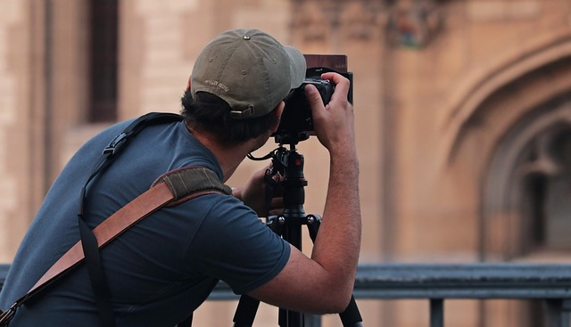
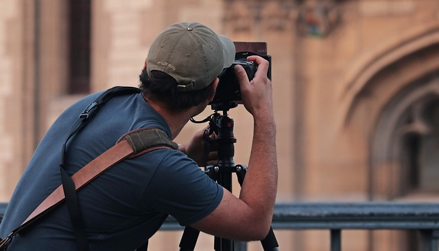

Servicios Audiovisual Profesional
Capturando Tus Momentos Más Importantes
En nuestro estudio audiovisual, nos dedicamos a transformar tus eventos y proyectos en experiencias visuales
inolvidables. Con un equipo altamente capacitado y tecnología de punta, incluyendo cámaras de alta
definición y un estudio profesional completamente equipado, estamos preparados para cubrir una amplia gama
de necesidades audiovisuales.
 ¿Tienes una fiesta, un evento de baile, o un anuncio que quieres destacar? Nuestro enfoque personalizado
garantiza que cada detalle se capture con la mayor precisión y calidad. Trabajamos estrechamente contigo
para entender tus objetivos y entregar un producto final que no solo cumpla, sino que supere tus
expectativas.
La seguridad y la confianza son pilares fundamentales de nuestro servicio. Nos aseguramos de que todo el
proceso, desde la planificación hasta la entrega final, se realice con la máxima transparencia y
profesionalismo. Con nosotros, puedes estar seguro de que tus recuerdos y mensajes quedarán en manos
expertas, listos para ser compartidos y celebrados.

El Proceso Creativo en Nuestro Estudio Donde Cada Detalle Cuenta
¿Tienes una fiesta, un evento de baile, o un anuncio que quieres destacar? Nuestro enfoque personalizado
garantiza que cada detalle se capture con la mayor precisión y calidad. Trabajamos estrechamente contigo
para entender tus objetivos y entregar un producto final que no solo cumpla, sino que supere tus
expectativas.
La seguridad y la confianza son pilares fundamentales de nuestro servicio. Nos aseguramos de que todo el
proceso, desde la planificación hasta la entrega final, se realice con la máxima transparencia y
profesionalismo. Con nosotros, puedes estar seguro de que tus recuerdos y mensajes quedarán en manos
expertas, listos para ser compartidos y celebrados.

El Proceso Creativo en Nuestro Estudio Donde Cada Detalle Cuenta
Trabajar en nuestro estudio es una experiencia que combina creatividad, precisión y tecnología de
vanguardia. Desde el momento en que cruzas la puerta, nuestro equipo se dedica a entender tu visión y a
convertirla en realidad.
Preproducción: Planificación y Conceptualización
Todo comienza con una sesión de planificación detallada. Escuchamos tus ideas, discutimos el propósito del
proyecto y establecemos un concepto claro. Ya sea para una sesión de fotos, un video promocional o una
grabación de un evento, cada detalle se diseña cuidadosamente, desde la selección de fondos y escenarios
hasta la iluminación y los ángulos de cámara.
Producción: Acción en el Estudio
Una vez que todo está planificado, pasamos a la acción. Nuestro estudio está equipado con cámaras de alta
definición, sistemas de iluminación ajustables y tecnología avanzada para asegurar que cada toma sea
perfecta. Durante la sesión, nuestro equipo dirige y ajusta cada aspecto técnico, asegurándose de que la
calidad visual sea inmejorable y que tu visión cobre vida con total claridad.
Postproducción: Perfeccionamiento y Edición
Después de la sesión, comienza la magia de la postproducción. Aquí es donde las imágenes y videos toman
forma definitiva. Utilizamos software de edición profesional para retocar, ajustar colores, añadir efectos y
realizar cualquier otra mejora que sea necesaria. El resultado final es un producto pulido, listo para
impactar a tu audiencia.
Entrega: Tu Visión Hecha Realidad
Finalmente, te entregamos un trabajo terminado que refleja fielmente lo que imaginaste. Nos aseguramos de
que estés completamente satisfecho con el resultado, ya sea que necesites las imágenes o videos para una
campaña, un evento o cualquier otra finalidad.